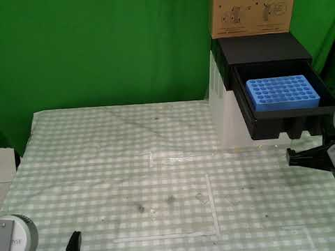

ICRA 2026 · 2026.06 · 中国赛场 6月11–13日
WBCD：双臂机器人数据采集与 π0.5 训练
团队成绩：生命科学赛道中国赛区冠军（1st） · 同赛道全球亚军（2nd）
面向晶泰科技生命科学赛道，围绕样品瓶装载、样品架入仪器和溶剂瓶管路切换，开展 PIPER 主从遥操作示教、LeRobot 数据整理与 π0.5 策略微调。
整理双臂 14D 状态 / 动作与三路 RGB 采集流程，保留 Task 2 训练配置：动作块长度 200、每次执行 50 步，并记录数据、模型与真机接口之间的衔接。
GitHub · 采集与训练核心 ↗ · YouTube · WBCD Demo ↗ · 赛事报道 ↗
代码范围与实验说明
公开仓库包含采集入口、PIPER 接口、π0.5 训练核心和配置，需结合兼容的上游 LeRobot 环境使用。它来自后续整理的项目快照，尚未核验与比赛当天版本完全一致；目标训练步数不等同于已确认完成的训练量，未将团队比赛得分作为 π0.5 独立性能指标。